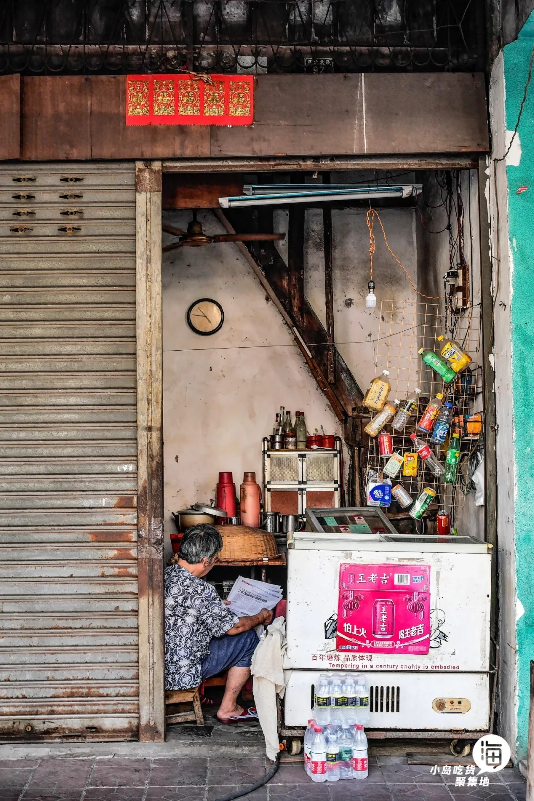
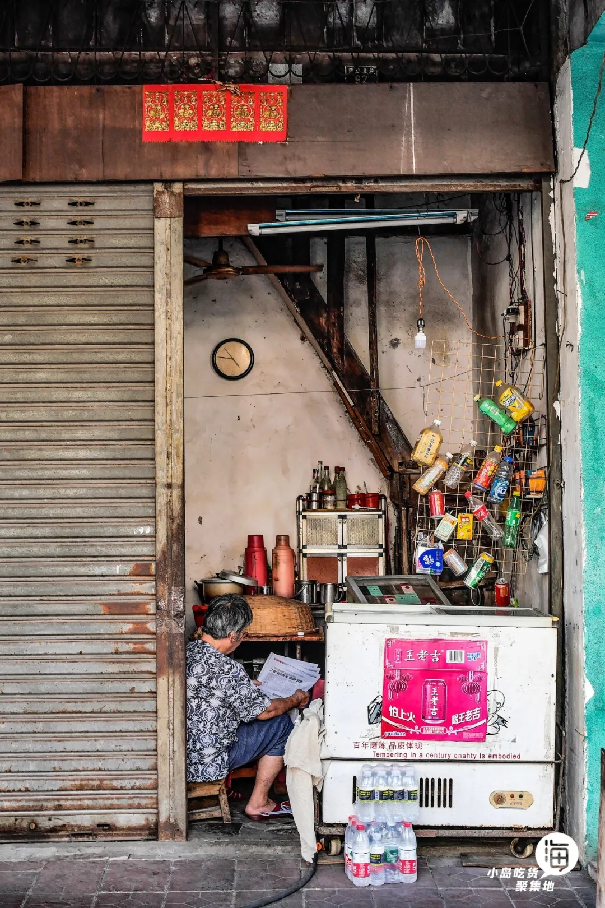

（我与世界纪录擦肩而过，好家伙，选人的时候刚好到我们班就不需要了哦^^#我也想要证书）
其实我的家乡有很多很多东西，但是我真的讲不完，我也不知道讲什么，所以我只展示出了我在提到海口时脑袋里第一瞬间想到的东西。
还是希望大家能到这里来走一走。当然，如果只是来这边【走马观花式的旅游】，其实没有必要，还不如不来，是我自己都会失望的程度。
但是！！如果是要来这边【住上一段时间】，住在山上、住在村里。
在清晨时，你伴着鸟叫，呼吸着非常清新的空气，会有一种飘飘然的感觉。
这种时候静静地做自己喜欢做的事（一切跟电子产品无关的），就会知道什么是心旷神怡了！(不过这个在哪都一样)
还有这里最美的大概就是天空了吧，高三快毕业的时候每一天傍晚都很美，大家都从教室里跑出来，拍出最好看的照片之后，都不舍得走。
我们会和自己的好朋友堆在一起，静静地看着美景消逝，感觉压力也一起飞散了，现在想想可真美好。（第一站的图大部分都出自于那个时期o）
不知道讲啥了，总之这里真的很【宜居】，就是有亿点热，OVER